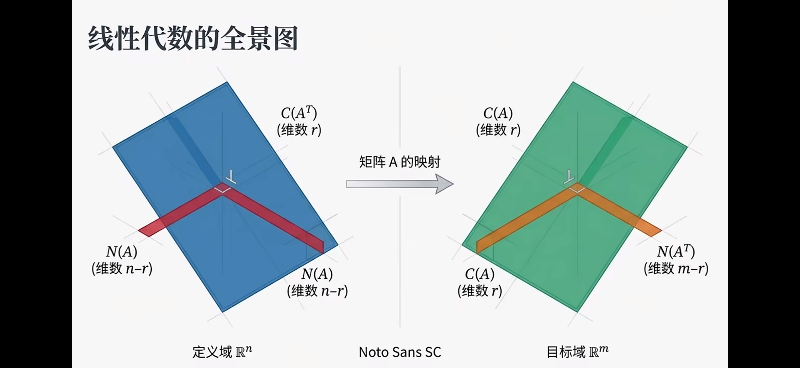
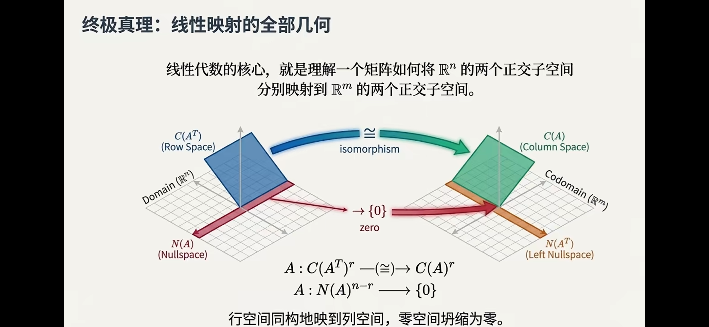
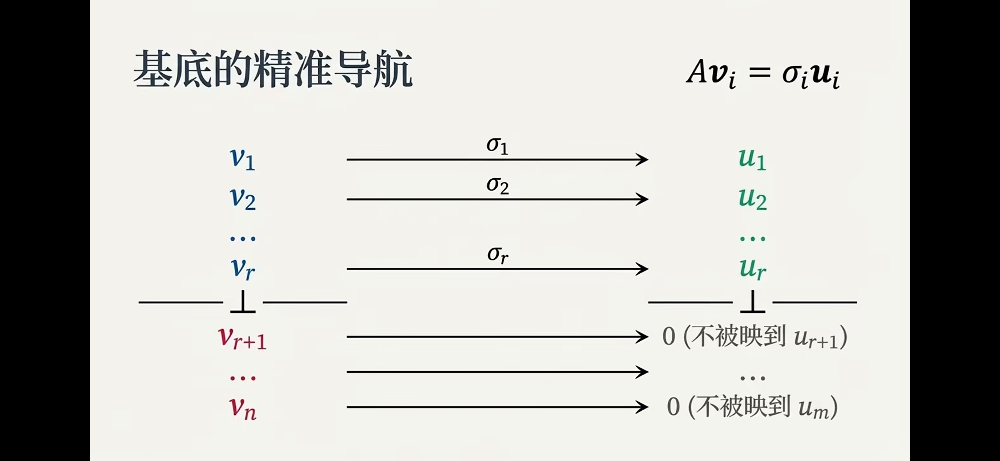
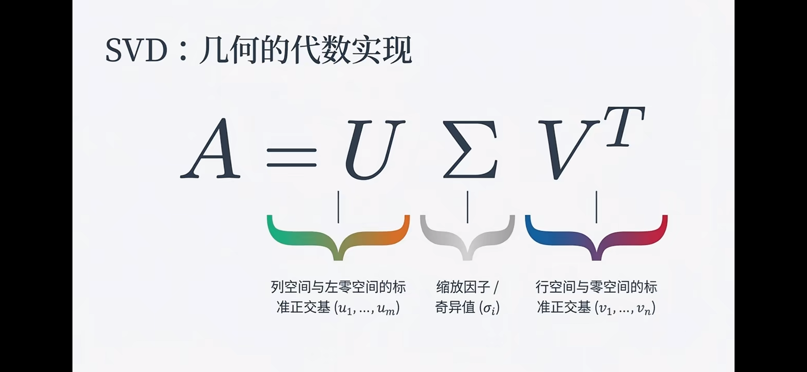

线性代数：四个基本子空间 (Four Fundamental Subspaces)
标签约定：Definition 表示定义，Theory 表示理论/定理，Inference 仅表示推导步骤，Result 表示结论或应用结论。
1. 问题设定 (Problem Setup)
Definition. 给定矩阵：
\[ A\in\mathbb{R}^{m\times n},\quad A:\mathbb{R}^n\to\mathbb{R}^m \]
它对应四个核心子空间：
- Column Space（列空间）\(C(A)\subseteq\mathbb{R}^m\)
- Row Space（行空间）\(C(A^T)\subseteq\mathbb{R}^n\)
- Null Space（零空间）\(N(A)\subseteq\mathbb{R}^n\)
- Left Null Space（左零空间）\(N(A^T)\subseteq\mathbb{R}^m\)
Result. 四子空间把输入空间和输出空间分别拆成两块正交结构，是理解 Ax=b、最小二乘和 SVD 的统一框架。

2. 列空间与可达输出 (Column Space)
Definition. 列空间定义为：
\[ C(A)=\{Ax\mid x\in\mathbb{R}^n\} \]
Inference. 若记 \(A=[a_1,\dots,a_n]\)，则：
\[ Ax=\sum_{i=1}^n x_i a_i \]
即输出是列向量的线性组合。
Result. 方程 Ax=b 有解当且仅当：
\[ b\in C(A) \]
3. 零空间与解的不唯一性 (Null Space)
Definition. 零空间定义为：
\[ N(A)=\{x\in\mathbb{R}^n\mid Ax=0\} \]
Theory. 若 \(x_p\) 是 Ax=b 的一个特解，则任意解可写成：
\[ x=x_p+x_n,\quad x_n\in N(A) \]
Result. 解是否唯一由 \(N(A)\) 决定。若 \(N(A)=\{0\}\)，则解唯一。
4. 行空间与左零空间 (Row Space and Left Null Space)
Definition. 行空间是：
\[ C(A^T)=\operatorname{span}\{\text{A 的行向量}\}\subseteq\mathbb{R}^n \]
Definition. 左零空间是：
\[ N(A^T)=\{y\in\mathbb{R}^m\mid A^Ty=0\} \]
Theory. 行空间描述“输入中可被检测到的方向”，左零空间描述“输出中与所有可达输出正交的方向”。
5. 正交补关系 (Orthogonal Complements)
Theory. 四子空间满足两组正交补：
\[ \mathbb{R}^n=C(A^T)\oplus N(A),\quad C(A^T)\perp N(A) \]
\[ \mathbb{R}^m=C(A)\oplus N(A^T),\quad C(A)\perp N(A^T) \]
Inference. 若 \(x_r\in C(A^T),x_n\in N(A)\)，则：
\[ x_r^Tx_n=0 \]
若 \(b_c\in C(A),b_\ell\in N(A^T)\)，则：
\[ b_c^Tb_\ell=0 \]
Result. 输入与输出空间都可分解为“有效部分 + 被抹除/不可达部分”。

6. 秩与维度分配 (Rank and Dimension)
Definition. 设：
\[ \operatorname{rank}(A)=r \]
Result. 四个子空间的维度为：
\[ \dim C(A)=r,\quad \dim C(A^T)=r \]
\[ \dim N(A)=n-r,\quad \dim N(A^T)=m-r \]
这给出秩-零度定理：
\[ n=\operatorname{rank}(A)+\operatorname{nullity}(A) \]
7. 输入分解与矩阵“过滤” (Input Decomposition)
Theory. 任意输入 \(x\in\mathbb{R}^n\) 都可唯一写成：
\[ x=x_r+x_n,\quad x_r\in C(A^T),\ x_n\in N(A) \]
Inference.
\[ Ax=A(x_r+x_n)=Ax_r+Ax_n=Ax_r \]
因为 \(Ax_n=0\)。
Result. 矩阵乘法像一个过滤器：零空间方向被完全压缩，只保留行空间方向的贡献。
8. 方程 Ax=b 的判据 (Solvability and General Solution)
Theory. Ax=b 有解等价于：
\[ b\in C(A)\iff b\perp N(A^T) \]
Result.
- 可解时，通解为 \(x=x_p+x_n,\ x_n\in N(A)\)。
- 不可解时，说明 \(b\) 含有左零空间分量，无法由 \(Ax\) 生成。
9. 最小二乘与残差空间 (Least Squares and Residual)
Theory. 当 Ax=b 无精确解时，最小二乘寻找：
\[ \hat{x}=\arg\min_x\|Ax-b\|_2^2 \]
满足正规方程：
\[ A^TA\hat{x}=A^Tb \]
Result. 残差 \(r=b-A\hat{x}\) 满足：
\[ r\in N(A^T),\quad r\perp C(A) \]
即把 \(b\) 正交投影到列空间后留下的“不可达部分”。
10. SVD 与四子空间 (SVD View)
Theory. 奇异值分解：
\[ A=U\Sigma V^T \]
其中 \(U,V\) 正交，\(\Sigma\) 的非零奇异值个数为 \(r\)。

Result. 若按非零奇异值排序，则：
\[ C(A)=\operatorname{span}(u_1,\dots,u_r),\quad N(A^T)=\operatorname{span}(u_{r+1},\dots,u_m) \]
\[ C(A^T)=\operatorname{span}(v_1,\dots,v_r),\quad N(A)=\operatorname{span}(v_{r+1},\dots,v_n) \]

SVD 直接给出四子空间的一组标准正交基。